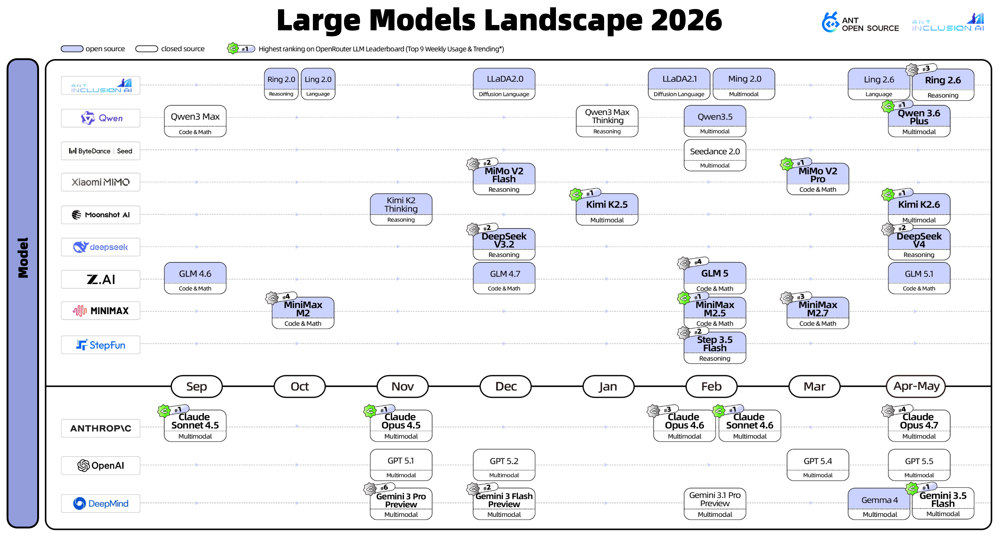

Ecosystem Overview
Agentic AI Landscape
A comprehensive visualization of the agentic AI ecosystem, mapping infrastructure, models, and frameworks that power autonomous AI systems.
Agent Infrastructure
Agentic AI Infrastructure Landscape
The foundational infrastructure layer that enables autonomous AI agents to plan, reason, and execute tasks across diverse environments.

Model Infrastructure
Model Infrastructure Landscape
The computational backbone supporting model training, inference, and deployment across cloud and edge environments.

Large Models
Large Language Models Landscape
A comprehensive map of foundation models powering the next generation of intelligent agents and applications.

Acknowledgment
Source & Attribution
These landscape visualizations are sourced from the Agentic AI Landscape project, an open initiative to map and understand the rapidly evolving agentic AI ecosystem.
Source: https://github.com/antgroup/agentic-ai-landscape
We extend our sincere gratitude to the maintainers and contributors of the Agentic AI Landscape project for their outstanding work in documenting and visualizing this complex ecosystem. Their efforts provide invaluable insights for the global AI community.
Get involved
Contribute to the Agentic AI Ecosystem
Help us build open standards, infrastructure, and governance for the next generation of autonomous AI systems.